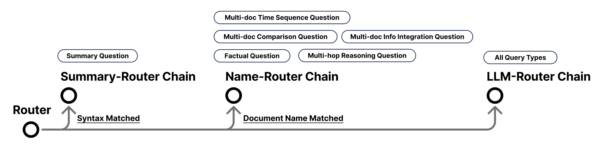

Background
Text-based Retrieval-Augmented Generation System
As part of the “Web Search and Mining” module at NCCU, our team architected a comprehensive text-based Retrieval-Augmented Generation system. We implemented agentic retrieval workflows alongside router-based query planning strategies to optimise retrieval accuracy. Within this collaborative effort, I applied my full-stack expertise to build custom web-based visualisation and prompt-testing tools, which significantly accelerated our team's evaluation and iteration cycles.
Tech Stack
Python, LLM Orchestration (Ollama), Vector Search (FAISS), Docker, SQLite
Project Repository
https://github.com/tingyun1015/WSM-Final_Project_RAG
NEW! I am currently redeveloping with the frontend interface: https://github.com/tingyun1015/RAG_project
Task Requirement
For this project, we formed a four-person team tasked with building a RAG system capable of answering queries based on provided documents within a strict one-month timeframe. We were required to use Ollama as our model provider, specifically constrained to the granite4:3b model in a local environment.
Agile Project Management & Leadership
Introducing Backlogs and Kanban Boards
I introduced straightforward agile management frameworks to the team, utilising a product backlog for task specification and a Kanban board to track our progress. We integrated these tools into our online meetings to ensure strategic alignment and foster highly effective collaboration, which ultimately drove the successful delivery of the project.
Structuring Project Progression
As the project had to be built from the ground up, I structured our development cycle into three distinct phases. We initially dedicated several weeks to research and trials, which culminated in formulating the core architecture. Following this, I implemented a breakdown strategy to address different categories of questions sequentially, ensuring we could systematically deliver the final product.
Designing a Router-based Architecture
Following our initial research phase, we identified specific recurrent patterns within the documents and queries. Consequently, I devised a robust routing strategy to handle these varied matched patterns. The system processes queries individually, relying on the Router to dynamically dispatch each query to its appropriate processing chain:

-
Summary-Router Chain
- Handles queries that match summary-related syntax.
- This chain mainly addresses “Summary Questions”.
-
Name-Router Chain
- Handles queries that match exactly one or two documents.
- This chain mainly addresses “Factual Questions” and “Multi-hop Reasoning Questions” with a single document path; while multiple document matches deal with “Multi-doc Info Integration Questions”, “Multi-doc Comparison Questions”, and “Multi-doc Time Sequence Questions”.
-
LLM-Router Chain
- Serves as a fallback for all other queries, which are handled directly by the LLM.
Building Internal Development Tools
Score Dashboard
I developed a Score Dashboard to visualise experimental results in a tabular format, enabling straightforward comparison of results from each execution, including scores and their corresponding generated answers. This representation made it easier to evaluate and compare the performance of various strategies and configurations.
Prompt Playground
I set up a web-based playground for quick experimentation with the LLM, allowing us to test and optimise prompt design and configuration settings.
Results
Competing against seven groups, we ultimately secured second prize for this intensive one-month project. This experience provided me with invaluable insight into building RAG systems from the ground up. Further details can be found in our: